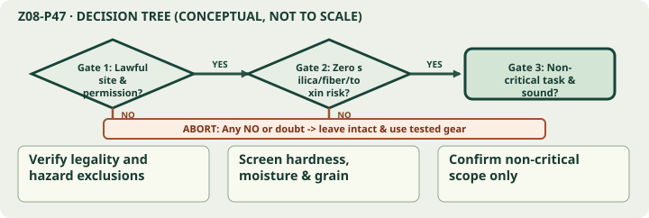

Z08-P47 · Rocks, minerals and materials · New manuscript
Matching Observable Material Properties to Task Boundaries
Apply a structured non-destructive screening matrix before choosing any natural material for a lawful non-critical task.
When it applies · Field evaluation of stone, soil, wood, and natural fibers.
Equipment · Hand lens, site-law map, personal protective gear as needed.

Actions
- Pass every candidate natural material through three sequential gates: legal collecting permission, dust/toxicity/biological hazard exclusion, and observable physical suitability.[R06, R08, R14]
- Reject any material that fails a single gate rather than trying to compensate with extra effort or improvised workarounds.[R06, R08, R14]
- Keep manufactured, maintained, tested gear as the primary safety layer for shelter, water treatment, fire, and rescue.[R13, R15, K01]
Failure recognition · Skipping legal or toxicity gates because a rock or wood piece looks physically convenient causes injury, exposure, or resource violations.[R06, R08, R14]
Verify · All three screening gates pass before any natural material is handled beyond visual study.[R06, R08, R14]
Stop or change course · Stop using any natural material whenever legality, chemical safety, moisture state, or failure behavior is uncertain.[R06, R08, R14]
Evidence and editorial notes
- K01 · OSHA · Hand and Power Tools Safety and Health Topics (current web edition)
- Section: Hand Tools > General Safety Rules · Conditions: Use of knives, saws, axes, hammers and hand tools
Support: Keep hand tools in good condition, use the right tool for the job, examine each tool for damage before use, operate according to instructions and wear appropriate personal protective equipment.
Limitations: General occupational rules do not replace task-specific forestry or field-tool training. · Conflicting evidence: None; baseline tool safety framework.
Editorial note: Anchors tool selection, pre-use inspection and operating boundary cards in Z09. · Specialist reviewer: Tool safety and occupational safety
Primary source · checked 2026-11-24 - R06 · NIOSH / CDC · Crystalline Silica Respiratory Dust Hazards (2024)
- Section: Overview; Exposure · Conditions: Silica-bearing material disturbed by cutting, grinding, or similar dust-producing work
Support: Respirable crystalline silica exposure can cause silicosis and other disease. Avoid creating dust during field recognition.
Limitations: Hazardous particles may be invisible. Wind, casual wetting and a mask alone do not establish exposure control. · Conflicting evidence: Conditions are recorded in the A03 audit.
Editorial note: Mandatory Z08 silica/eye safety gate. · Specialist reviewer: Industrial hygienist and geologist
Primary source · checked 2026-11-25 - R08 · National Park Service / eCFR · 36 CFR 2.1 Preservation of Natural, Cultural and Archeological Resources (Current CFR)
- Section: 36 CFR 2.1 natural resource collecting prohibitions · Conditions: National Parks, Monuments, and federal recreation areas
Support: Collecting rocks, minerals, fossils, wood, or natural specimens is prohibited on National Park System lands unless specifically authorized.
Limitations: Rules vary across USFS, BLM, state, tribal, county, and private lands; check the governing land manager before taking any sample. · Conflicting evidence: None noted.
Editorial note: Prevents unlawful federal resource extraction. · Specialist reviewer: Public-lands resource manager
Primary source · checked 2026-11-25 - R13 · National Park Service · Rocks and Minerals Geological Overview (Current web edition)
- Section: Rocks and Minerals overview · Conditions: Unrated stones near a fire or during thermal cycling
Support: Use agency-approved fire facilities and keep people away from cracking or shifting material.
Limitations: Editorial avoidance. The cited geology overview does not establish a safe rock type, moisture test or heating threshold. · Conflicting evidence: Conditions are recorded in the A03 audit.
Editorial note: Reinforces Z03/Z08 wet-rock spalling stop. · Specialist reviewer: Geologist and fire safety reviewer
Primary source · checked 2026-11-25
Current assessment · A04-R13 (2026-11-25) · Open: support partial or missing (A04): No general authorization of heated rock or context for cracking. Retain hazard avoidance as editorial and use site fire orders and material review for prescriptions. Limits: Specialist review PENDING (Geologist and fire safety reviewer); publication HOLD. All release decisions pending. - R14 · USGS · National Minerals Information Center and Mineral Commodities (Current web edition)
- Section: Metallic ores, sulfides, and heavy-metal mineral toxicity · Conditions: Unidentified metallic-luster minerals, tailings, or bright oxidized crusts
Support: Sulfide ores and metallic minerals can contain lead, arsenic, mercury, or copper compounds hazardous via dust or hand-to-mouth transfer.
Limitations: Do not taste, lick, burn, or process unidentified metallic or brightly crusted minerals; wash hands after handling. · Conflicting evidence: None noted.
Editorial note: Blocks hazardous mineral extraction/handling. · Specialist reviewer: Geochemist and toxicologist
Primary source · checked 2026-11-25
Current assessment · A04-R14 (2026-11-25) · Open: support partial or missing (A04): No exposure or toxicological operator section for the combined ore claim. Need exact material mineralogy and mapped site exposure. Limits: Specialist review PENDING (Geochemist and toxicologist); publication HOLD. All release decisions pending. - R15 · Minnesota DNR · Native Trees of Minnesota Identification Reference (Current web edition)
- Section: Regional wood species, grain, bark, and moisture variability · Conditions: Dead downed wood and natural bast fibers in Upper Midwest forests
Support: Wood density, grain straightness, resin content, and decay state vary widely by species, tree part, and moisture history.
Limitations: Visual grain inspection cannot certify structural load capacity; avoid cutting live trees where prohibited and reject punky or cracked wood. · Conflicting evidence: None noted.
Editorial note: Reconciles B007 wood notes with material limits. · Specialist reviewer: Forestry and wood-science specialist
Primary source · checked 2026-11-25
Source lineage · New manuscript (Z08 P16 material selection) · Classification · New manuscript.